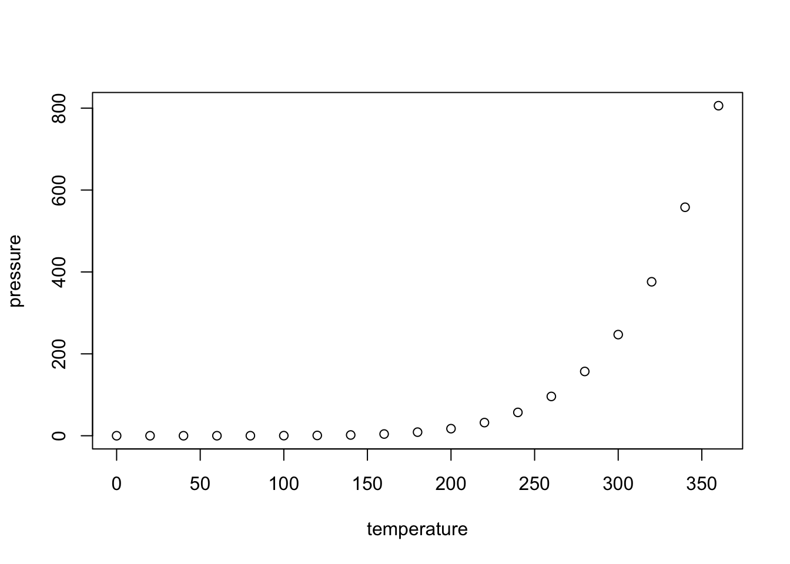

Estudié eonomía en la Universidad del Pacífico, también administración pública en The Maxwell School y territorio y población en la UAB. Dirigí techo.org/pe y trabajé diseñando políticas y gstionando programas en los ministerios de Desarrollo e Inclusión Social, de Educación y de Trabajo. Aprendí R más tarde de lo que hubiera querido. Fundé desarro.io con un grupo de amigs. Me gustan los mapas, y la visualización de datos.

Imagen de portada: Mosaicos generados con la herramienta “Escher-like spiral tiles” de Craig S. Kaplan